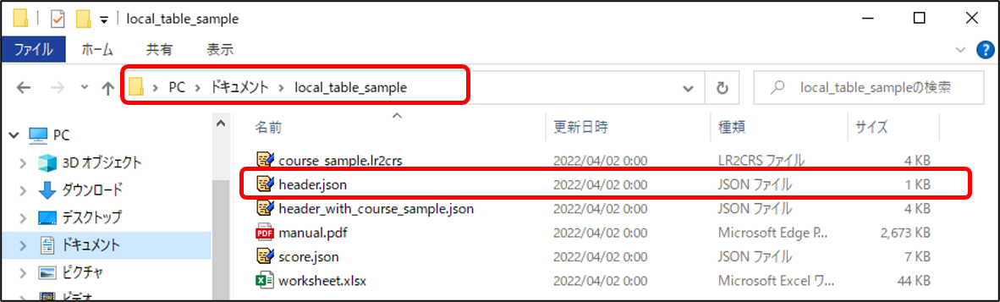
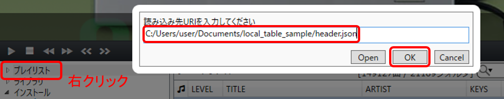
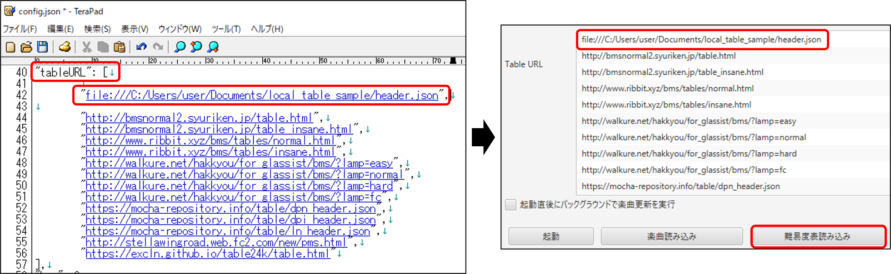

会員登録等を介さず、ローカル環境下に難易度表を作成し楽しむ方法はありませんか？ というリクエストを頂きました。
そこで当コラムでは、Google スプレッドシートの代わりに 表計算ソフト(.xlsx / Excel等) でデータを作成し、URLの代わりにファイルパスから難易度表を登録する方法をご紹介します。プライベートなプレイリストの作成や、難易度表の動作確認などにも利用できるかもしれません。
コラム - 難易度表の作成方法について / 段位認定コースセットの作成方法について の内容を統合しています。動作対象の本体プレイヤーは LR2 / beatoraja です。
【Download】ローカル環境用 難易度表作成用テンプレート & サンプルセット
- 「worksheet.xlsx」 … ここでデータ作成を行います。.xlsx に対応した表計算ソフトが必要です。(Excel 2019 で動作確認しました。)
- 「header.json」 … 難易度表全般のプロパティと段位認定情報を書き込むファイルです。
- 「score.json」 … 難易度表に登録する譜面の情報を書き込むファイルです。
- 「header_with_course_sample.json」「course_sample.lr2crs」 … 解説用のサンプルファイルです。
- 「manual.pdf」 … 完全オフライン環境向けのマニュアルです。内容は当コラム(と関連するコラム) に準じますので、どちらを参照頂いても構いません。
* 難易度表をウェブ公開するためのファイル類は含まれません。必要になった場合は、難易度表の作成方法について のサンプルセットから導入してください。
スプレッドシートの代わりに「worksheet.xlsx」を使用する以外は 難易度表の作成方法について の手順(2)～(3) と同様です。詳しくは当該コラムを参照してください。
メモ帳アプリから「header.json」を編集し、ワークシートの「テンプレート(難易度表)」に楽曲データを書き込んで「score.json」に貼り付けます。
「score.json」のデータ末尾 }, を }] に書き換えるところだけは手動で、毎回忘れずに行ってください。
ローカル環境の場合は 難易度・曲名・md5・sha256 (BMSONの場合のみ) のデータが揃えば十分です。「bmsmd5 の効率的な取得方法について」 も参考にどうぞ。
こちらも 段位認定コースセットの作成方法について と同様の作業になります。
ただし、この作業を行って改変した「header.json」に1コースも登録されていない場合、難易度表の読み込みに不具合が発生します。
段位認定が必要なければこの工程はスキップし、作業する場合は必ず1コース以上作成しておいてください。
ワークシートの「テンプレート(段位認定)」に各種データを書き込んで、LR2の場合はコースファイルを出力し、beatoraja の場合は「header.json」を上書きします。
「header.json」コースデータ記入部 最終行末尾のカンマの削除 ]}, → ]} は毎回忘れずに行ってください。
「header_with_course_sample.json」「course_sample.lr2crs」は、ワークシート「シート例(段位認定)」の情報を記入した場合の出力例です。参考にどうぞ。
「header.json」「score.json」が同一ディレクトリにあることを確認し、「header.json」のファイルパスを取得(ファイルを選択 > Shift+右クリック > パスのコピー) しておきます。
これらのファイルは管理しやすい場所に設置して構いませんが、ファイルパスに半角英数字(ASCII文字) 以外が含まれないようにし、パス内の \ マークは / に変換しておいてください。
以下は一例として、ユーザ名 "user" が Cドライブ > ドキュメント にサンプルファイル「local_table_sample」全体を設置したものとして紹介します。

BeMusicSeeker を使用します。あらかじめインストールしておいてください。
メイン画面の左側「プレイリスト」を右クリック > インポート > URLを指定して読み込む を選択し、上記のファイルパスを入力して OK を押すと難易度表として読み込まれます。

(v0.8.4現在) beatoraja-config > リソース > Table URL ではファイルパスが入力出来ませんが、URLの保存されている beatoraja/config.json を直接編集する事で、ファイルパスから難易度表を読み込ませることが可能になります。ただし、操作を誤ると config.json が初期化されてしまうので、あらかじめバックアップを作成しておいてください。
beatoraja フォルダ直下の config.json をメモ帳で開き、"tableURL":[ と書かれている行の下に新たに行を挿入し、次のように入力して保存します。

\マークや非ASCII文字が含まれていないか、ファイルパス周りの記述にミスがないか、もう一度確認してください。
きちんと導入できていれば、右図のように beatoraja-config > リソース > Table URL に難易度表が表示されています。「難易度表読み込み」を押して反映しましょう。
以降は通常の難易度表と同様に、「header.json」「score.json」を編集し、BeMusicSeeker あるいは beatoraja 上で更新すればOKです。
.json ファイルを移動させたい場合は、一旦難易度表から削除して、移動先のファイルパスで再度上記の導入作業を行ってください。
2つ目以降の難易度表を作成した場合も同様に行ってください。